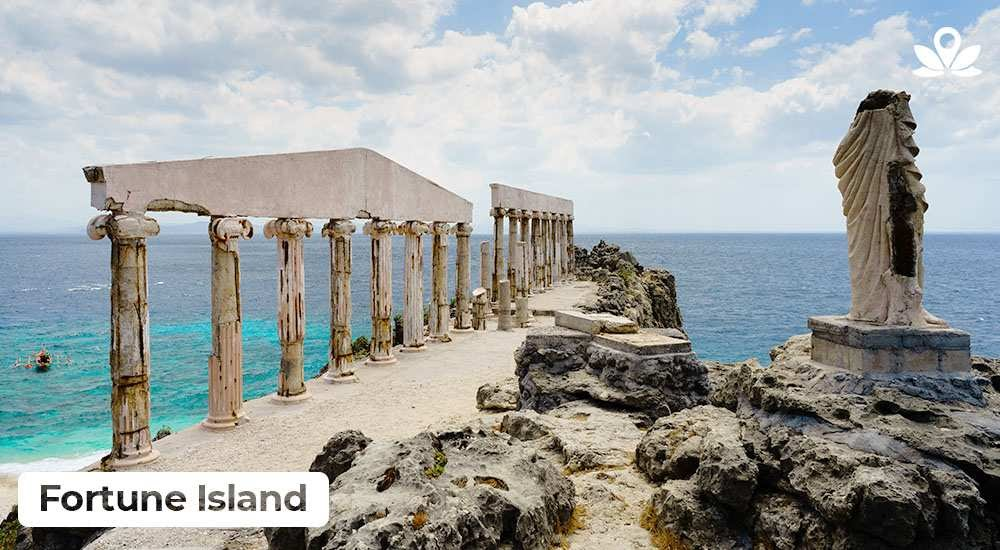
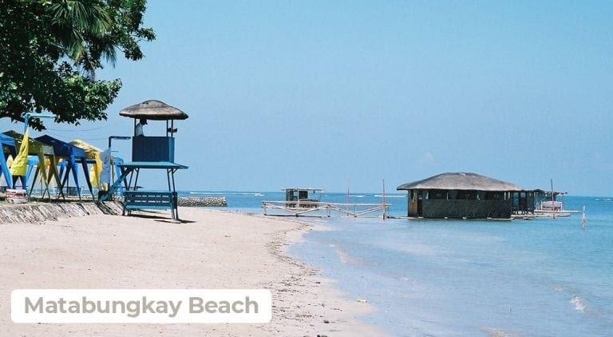
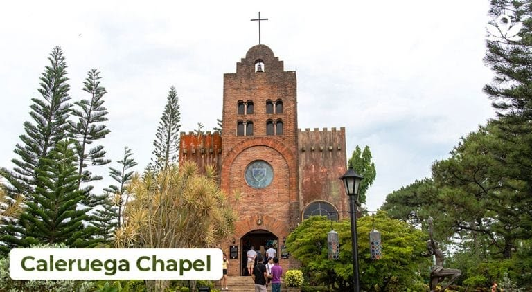
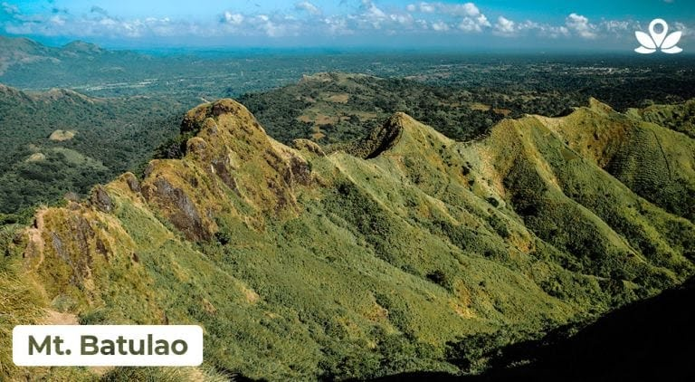

Hadu Kenn!

Kenn Mathew P. Bituin
Hi everyone! I'm Kenn , I love traveling ever since when I was a little. I started loving this because of my parents, they brought us to different places and tourist spots that's why when I grew up I really liked it.
These are some of the tourist spots in batangas
Fortune Island
Fortune Island
Located in Nasugbu, Batangas, Fortune Island is surrounded by crystal waters and an unobstructed view of the sea. Fortune Island is a popular Batangas tourist spot because of its iconic Grecian pillar ruins, giving the Santorini Batangas vibe. While the area does not have electricity, you can still enjoy tons of activities like swimming, cliff diving, and camping. If you don’t want to camp here, there are many beach resorts near Fortune Island that you can stay at like the Canyon Cove Batangas, Monte Maria Batangas, and ZEN Rooms.
Matabungkay Beach
Matabungkay
Matagbungkay Beach has been a favorite quick getaway destination since its glory days in the ‘50s. Since then, what was once a small fishing village turned into a popular tourism destination for weekend travelers. The place is adorned with a long stretch of stunning beach enough to take your mind away from the busy city. You can also find Matabungkay beach resorts nearby that won’t let you break the bank.
Caleruega Chapel
Caleruega
Caleruega Chapel will bring you closer not only to God but also to nature as it is surrounded by delicate flowers and trees. This place is a popular wedding destination and shooting location. This tourist spot in Batangas is also ideal for retreats, recreation, or any other outdoor activities.
Mt. Batulao
Mt. Batulao
This mountain is beginner-friendly as it’s easier to hike than other mountains. But it’s not all boring though. Mt. Batulao in Batangas Philippines gives hikers a decent challenge and extremely scenic trails of rolling slopes and green grasslands. Before reaching the summit, you will have to pass through several mini-peaks which takes roughly four hours to arrive. For hikers in it for the stunning views and wanting to take their time, there are campsites along the trail to relax and spend the night. You see, Batangas tourism is not just about beaches.